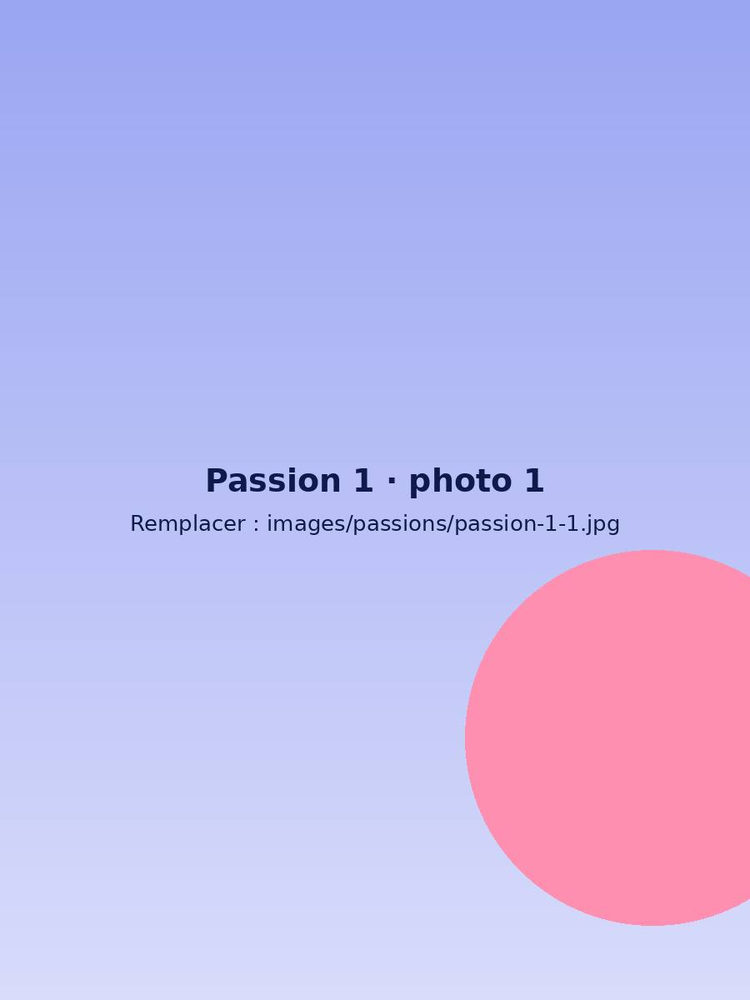
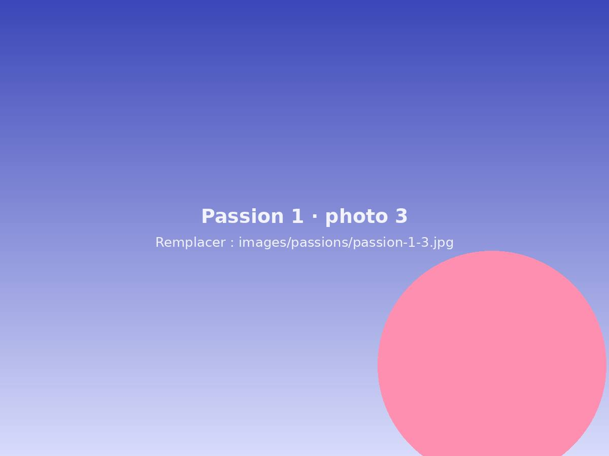
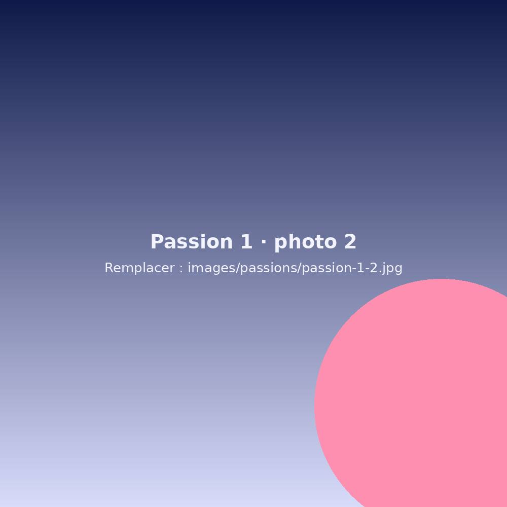
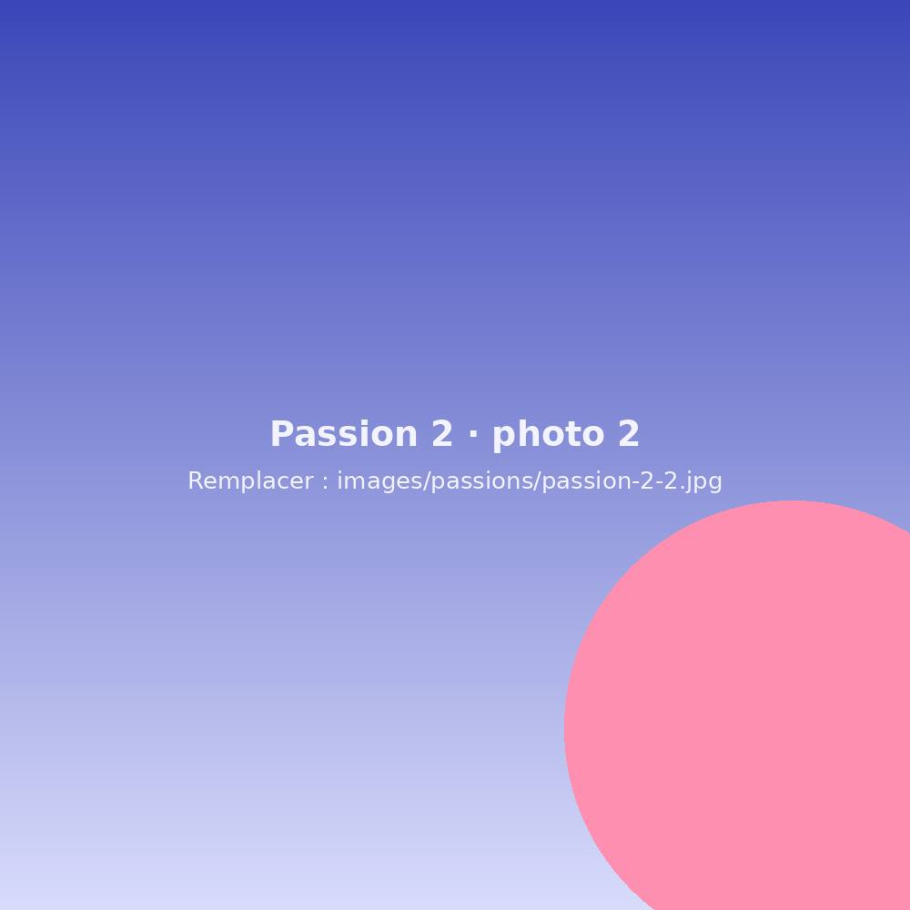
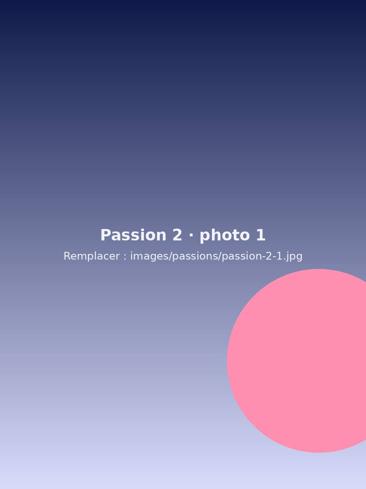
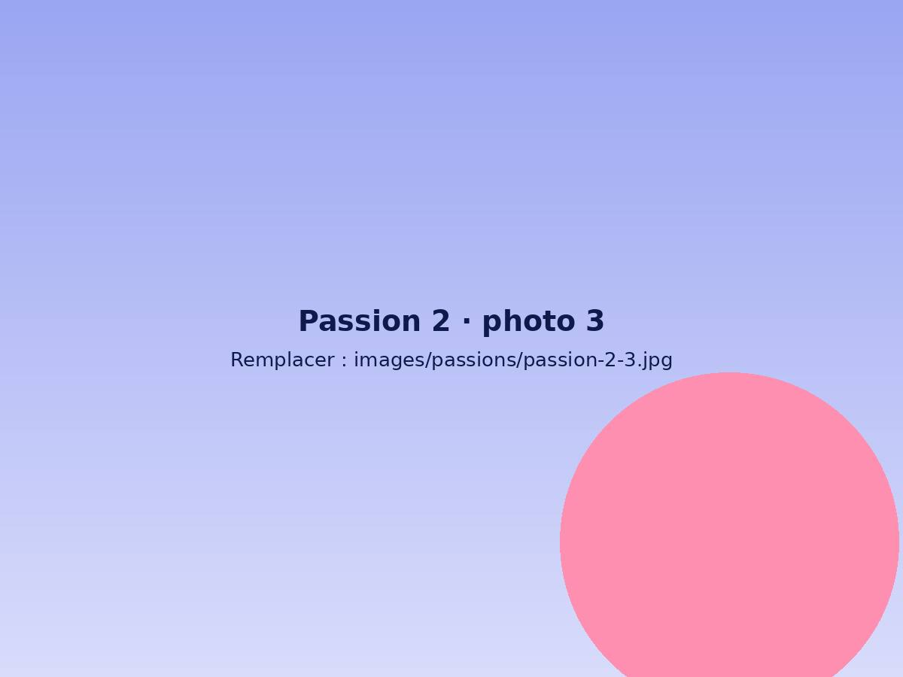
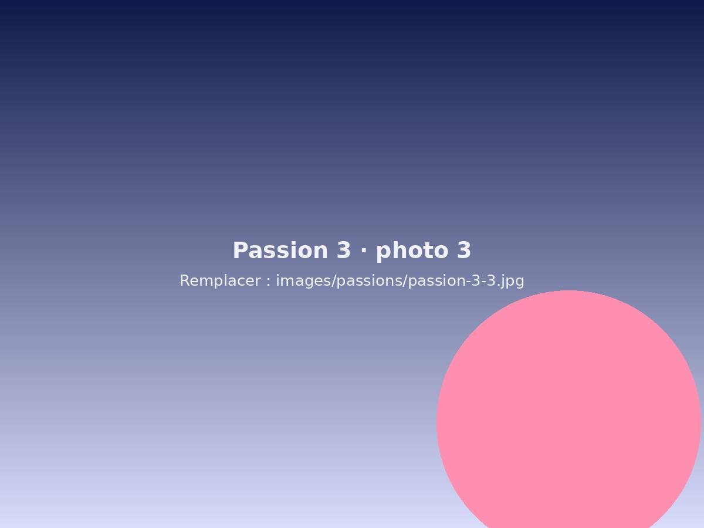
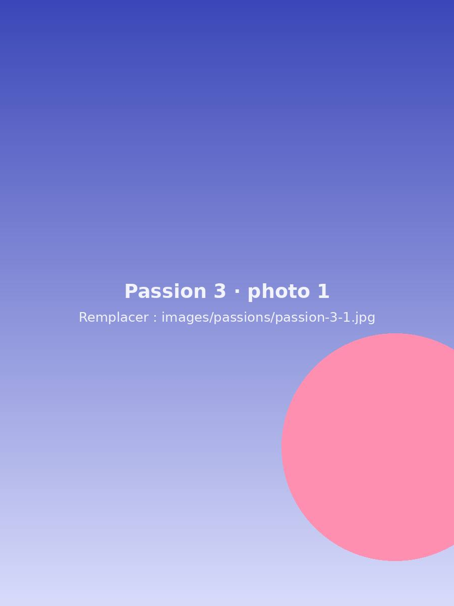
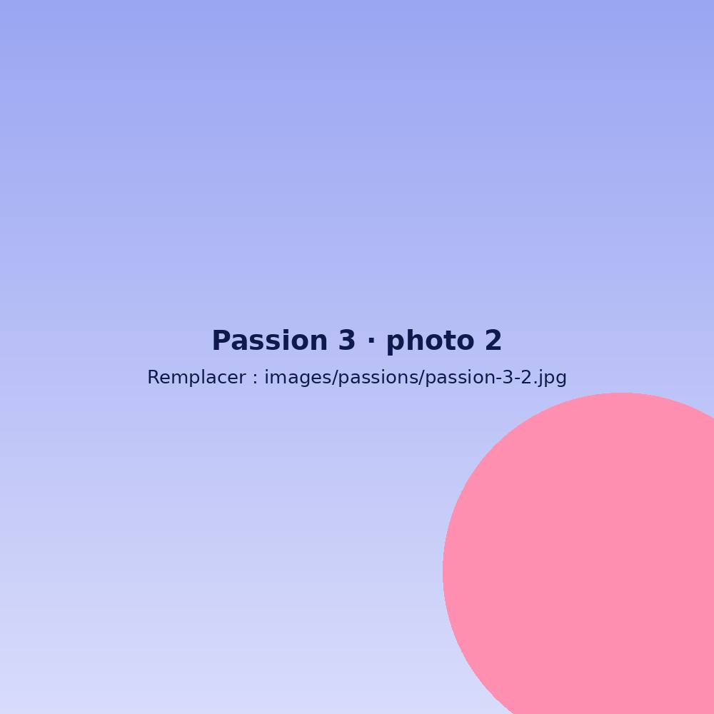

En dehors du bureau
Mes passions
Ici, retrouvez ce que j’aime faire durant mon temps libre !
01
Filmer et monter
Sur mon temps libre, et surtout en vacances, je filme dès que je peux avec ma caméra. J’aime immortaliser les moments passés avec mes proches, puis monter toutes ces séquences pour n’en garder que le meilleur. Le but est de créer une vidéo dynamique, agréable à regarder, et d’en faire un beau souvenir à revoir plus tard. Ce que je préfère, c’est le moment où je montre la vidéo à mes proches. On se retrouve tous ensemble pour revivre ces moments, et ça permet quelquefois de se remémorer des détails que l’on a oubliés, mais pas la caméra !



02
Le sport
Depuis toute petite, je suis une personne très sportive : j’ai fait 2 ans de handball, 6 ans de tennis et 8 ans de football. Le foot a une place particulière dans ma vie : j’aime jouer en équipe, s’entraider entre coéquipières et vivre des victoires comme parfois des défaites. Ce sport m’a aussi appris la persévérance et l’envie de progresser. Pour moi, le sport permet de se dépasser, et j’aime la sensation de se sentir bien après.



03
La
photographie
J’aime prendre des photos pour capturer des moments de joie ou de beaux paysages. Je les retouche ensuite si besoin, pour obtenir de plus belles couleurs ou transmettre une émotion à travers l’image.


